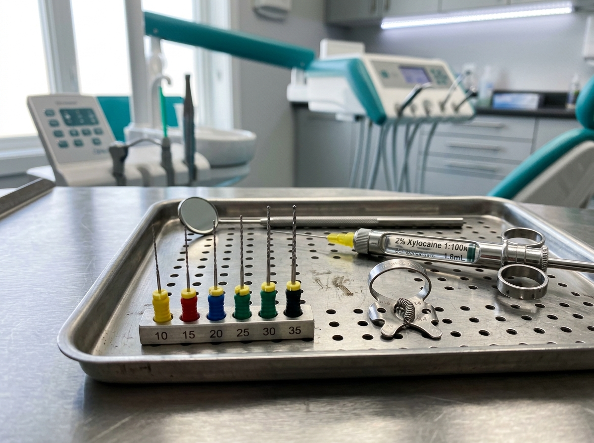

Conservativa ed endodonzia
Preserviamo i tuoi denti naturali con otturazioni estetiche, ricostruzioni e trattamenti canalari.
Preserviamo i tuoi denti naturali con otturazioni estetiche, ricostruzioni e trattamenti canalari.

Conservativa
L'odontoiatria conservativa si occupa di riparare i danni causati dalla carie o da traumi, preservando la struttura del dente. Le otturazioni vengono eseguite con resine composite estetiche che si mimetizzano perfettamente con il colore naturale del dente, sostituendo le vecchie otturazioni in amalgama.
In caso di danni più estesi, si ricorre a intarsi in ceramica o composito realizzati su misura dal nostro laboratorio interno, che restituiscono al dente la forma e la funzione originali con un'elevata resistenza nel tempo.

Endodonzia
Quando una carie profonda o un trauma raggiunge la polpa dentale (il "nervo"), è necessario un trattamento endodontico, comunemente chiamato devitalizzazione. Il trattamento consiste nella rimozione della polpa infetta, nella disinfezione e nella sagomatura dei canali radicolari, che vengono poi sigillati con materiali specifici.
L'endodonzia è un trattamento eseguito in anestesia locale, quindi indolore. Il dente trattato viene poi ricostruito con un'otturazione o, se necessario, con una corona protesica per restituirgli piena funzionalità.
Domande frequenti
Le resine composite di ultima generazione offrono un'eccellente resistenza meccanica e un'estetica superiore. Per cavità molto estese, gli intarsi in ceramica rappresentano la soluzione più duratura.
No. Il trattamento viene eseguito in anestesia locale e il paziente non avverte dolore. L'obiettivo dell'endodonzia è proprio eliminare il dolore causato dall'infiammazione o dall'infezione della polpa.
Un dente privato della polpa non riceve più nutrimento dall'interno e può diventare più fragile nel tempo. Per questo, in molti casi, il dottore consiglia di proteggerlo con una corona che ne aumenta la resistenza.